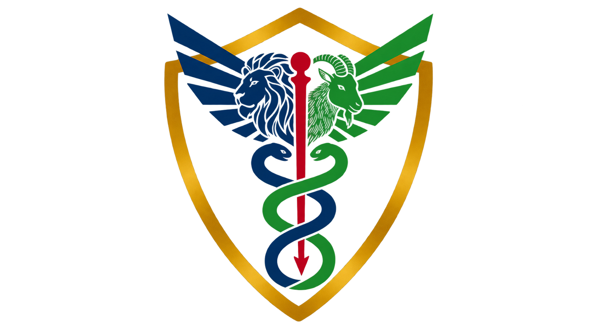
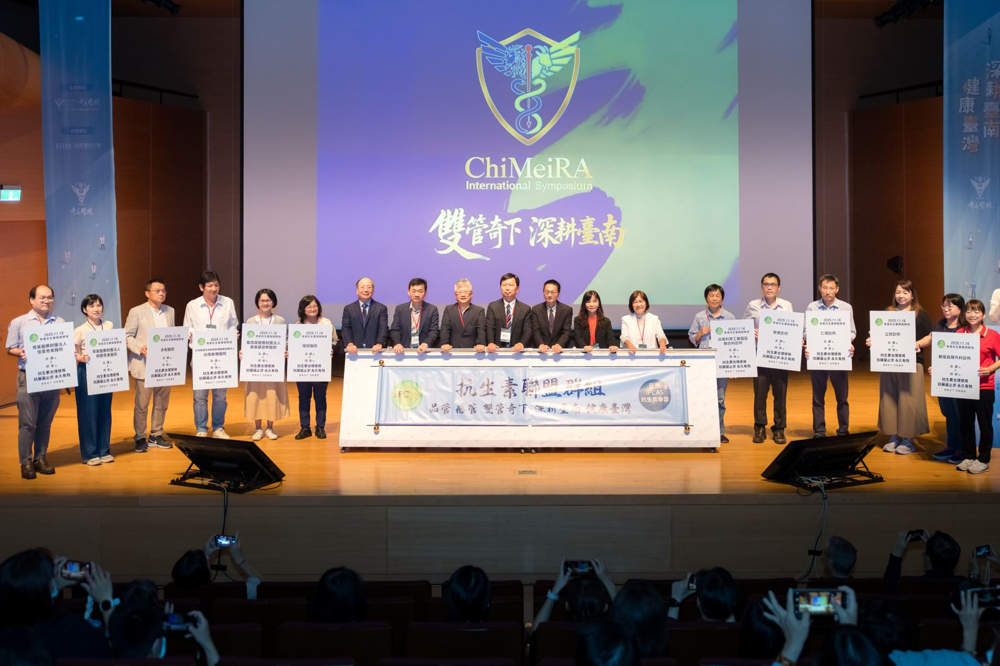

01Clinical ValueAI 共航 · 講者漫畫
數據驅動的臨床價值：
從智慧決策到抗生素管理
以數據驅動智慧決策與抗生素管理，讓 AI-CDSS 在真實世界轉化為可衡量的臨床價值。
湯宏仁 副院長奇美醫院

ChiMeiRA雙管奇下 · 2026品質管理 × 感染管制
AI 智慧醫療共創論壇暨雙管共識營
以人本為起點，以科技為連結。
讓跨域協作，成為醫療系統持續學習的力量。

ChiMeiRA，源於「嵌合」的概念。當品質管理與感染管制相遇，讓不同專業的力量匯流，建立以人為本、能持續改善的醫療系統。
延續 2025 年「雙管奇下・深耕臺南」，今年聚焦 AI 如何進入真實照護：由臨床價值出發，建立安全治理，讓改善成為可長久運作的系統能力。
從臨床價值、安全治理，到持續學習與永續運作，串起 AI 進入醫療的完整路徑。
以數據驅動智慧決策與抗生素管理，讓 AI-CDSS 在真實世界轉化為可衡量的臨床價值。
系統整合、資料、風險與責任邊界：組織如何準備好，讓 AI 安全落地。
串聯 Clinical Value、Governance 與 Sustainability，讓 AI 成為能持續學習、改善並長久運作的醫療系統能力。
Smart Check-in · 智慧醫療展示與上屆成果交流
活動目的、長官致詞、當日任務與預期成果
湯宏仁副院長· Clinical Value
廖家德技術長· Governance
陳世英副院長· Sustainability
From Smart to Sustainable: Building a Learning Health System through AI, Quality and Infection Control
休息 5 分鐘，前往分組教室
共創工作坊：A CDSS：智慧抗生素管理 ／ B 病人旅程：智慧品質照護 ／ C 醫療安全：團隊、溝通與AI
跨院區交流 · 智慧醫療解方交流區
數位驅動、安全文化、全人照護：討論框架與決策規則
永康三主軸 ＋ 柳營院區 ＋ 佳里院區（院區主題待定）
走讀、點評與投票，尋找跨院區共用的題目
每組 8 分鐘：問題、方案、治理、KPI 與執行責任
優先 PoC、跨院區協作與 3／6／12 個月里程碑
共識宣言、合照與後續行動
議程為規劃版本；講者、講題與分組空間以主辦單位最終公告為準。
11:10–12:30 同時進行。每位參與者限選一場；病安工作坊限額 40 名，額滿列入候補。
共創工作坊 · 三個任務，一起解題
從敗血症、培養結果或抗生素降階情境，設計 AI-CDSS 的介入時機與臨床決策流程。
從門診、住院到轉銜返家，找出病人的資訊斷點，以及最值得智慧化的照護接觸點。
限額 40 名
從事件通報、危急值、跌倒或交班場景，思考如何捕捉弱訊號，以團隊溝通與 AI 支援，共同守護醫療安全。
下午共識營供奇美醫療體系三院區院內同仁登記參加，將上午的觀念轉成 2027 共同行動；分組由主辦單位確認。
每組提出一個可驗證方案：問題與使用者、AI 介入、安全治理、病人／安全結果及效率指標、負責人，以及 90 天第一步。
下午共識營限奇美醫療體系同仁參加，院內同仁登記後仍須由主辦單位確認分組。
全國醫療機構之醫師、護理師、藥師、醫事、品管、病安、感管、資訊及管理人員。
上午論壇 ＋ 一場工作坊永康、柳營與佳里奇美同仁；上午採報名制，下午共識營分組由主辦單位確認。
上午論壇 ＋ 一場工作坊報名截止日：2026年10月23日。 繼續教育積分規劃：醫師、護理、藥師、適用醫事積分，以及台灣醫療品質協會、感染管制學會學分；申請與核定時數詳見下方 QA。工作坊名額依實際收件順序安排，候補者由主辦單位通知。
若嵌入表單無法顯示，開啟獨立報名頁。
下午為奇美醫療體系三院區院內同仁的策略共創。院內同仁可於報名表登記，仍須由主辦單位確認分組；不開放院外報名。
三場工作坊於相同時段平行舉行，報名時必須擇一。病安工作坊限額 40 名，額滿列入候補。名額依實際收件順序安排，候補者由主辦單位通知，請勿重複報名。
規劃申請醫師、護理、藥師及適用醫事積分，並評估申請台灣醫療品質協會與感染管制學會學分。核定種類與時數於確認後公告；請依現場規定簽到與簽退。
2025 雙管奇下活動回顧 · 點照片放大
奇美醫院 品質管理部 × 感染管制中心
柳營奇美醫院 品質管理中心 × 感染管制中心
佳里奇美醫院 品質管理中心 × 感染管制中心
本一科技
科技整合、共創工具與智慧醫療技術支援